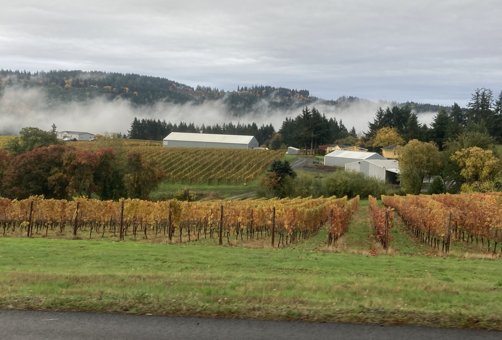

# Using Transit Travel Times to Judge the Metro 2040 Plan
##### An analysis by [Andrew Lindstrom](https://www.city-hikes.com)
---
If you believe the hype, the [Metro 2040 Growth Plan](https://www.oregonmetro.gov/2040-growth-concept) has a lot going for it.
For the unaware, Metro is the Portland area's Metropolitan Planning Organization, which is something every metro area has, primarily
to direct transportation funding. What makes Metro unusual is that it has both taxing power (as evidenced by the much maligned
homeless supportive services tax), and that it has an elected body governing it. As an urban planner, this is exactly the kind of situation
we dream of. Even non-urban planners have been known to be fans of a metropolitan government with teeth - most "famous" of them being
the former mayor of Milwaukee, Frank Zeidler (I just read his autobiography).
Over the years, Metro has been in the driver's seat for a lot of land use policy in the Portland area. The two primary powers that Metro
retains as it relates to land use planning are the ability to review local government's Comprehensive Plans for compatability with the
Metro Comprehensive plan (a.k.a the 2040 Growth Plan), and the authority to update the region's urban growth boundary (UGB). I could not find specific
examples of the Metro council overruling a city's plans - but clashes over the UGB are the norm. In 2011, [a bill](https://www.oregonmetro.gov/news/bill-to-take-away-metro-s-planning-authority-scheduled-for-friday-hearing)
was introduced to strip Metro of their power over the UGB (to no avail). Evidently, it's more politically feasible to have cities have
just one more layer of bureaucracy (UGB expansions are reviewed by the state anyways) rather than forcing them to throw out plans which
are likely a genuine reflection of the mood of the place.
A brief read of the 2040 Growth Plan shows a great deal of thought, care, and effort put into orderly growth aimed at protecting
rural lands from sprawl, promoting transportation options, and enhancing the livability of the Portland region. But the unwillingness of Metro
to meaningfully change any places plans to match the 2040 Growth Plan means it is easily regulated to the back burner. It means that places
like Oregon City - designated as a Regional Center since day 1 - still have not officially adopted it in their plans. This isn't ideal, but it
does show the limits of regional government in leading policy changes. Ultimately, the downsides of the Balkanization of municipalities
that has occured since the advent of the automotive age - ranging from outright racism historically to overt exclusion today - is only minorly
mitigated by the prescene of Metro. But that minor amount of mitigation is still a positive.
In any case, before we go any further it's worth getting aquainted with the areas that Metro has designated as Regional Centers.
---
As we can see in the map above, there are nine different regional centers (technically, downtown Portland is it's own thing, but I have included
it in this analysis as well). For the most part, they make a good amount of sense. It's the major suburbs of the city plus a few suburban shopping malls.
A brief aside: there's nothing that an MPO loves more than calling suburban shopping malls "regional centers" or something of the sort and zoning them for
essentially infinite density, only for nothing to really happen. That's the story of Gateway in Portland, and it's the story of
both West Towne and East Towne Mall in my hometown of Madison. On the one hand, it makes sense - since they often exist at strategic nodes in the
transportation network, and there aren't usually a ton of neighbors to raise heck about new apartments - but on the other hand I've yet to see a good
development project at a suburban mall (lifestyle centers don't count!).
But regardless of the challenges that these specific areas have faced, a key aspect of the 2040 plan is centralizing transportation investment
to the benefit of regional centers. You all probably know that I'm a public transportation wonk, and Metro has more or less been on
board with using *"regional transportation investment"* to mean *"light rail expansion"* (or freeway widening if ODOT calls them auxiliary lanes, but that's
a can of worms I can't open now). Recently, this transportation investment has moved away from light rail and into [so-called BRT](https://city-hikes.com/2025/02/05/the-heat-death-of-brt/)
after the failure of the [SW Corridor Plan](https://city-hikes.com/2024/07/09/dreaming-of-a-new-sw-corridor/). It's too soon to say what the long-term ramifications
of this will be, but I'm not very optomistic, since the BRT projects in the pipeline seem very unlikey to move the needle on regional transportation.
The MAX, for all its flaws, has some segments that compete at all times of day with driving (along I-84 and under the West Hills) and has a total
capital cost of ~75% of the budget for the IBR project.
That said, since Metro lays at the intersection of land use and transportation within the metro region, we should be able to use public transportation
access to/from a given place to understand how well Metro is doing at improving the situation. To do this, I developed some [poorly articulated code](https://github.com/blumdrew/transit-isochrones)
to create isochrones (lines of equal travel time) on public transportation. I generated a 45-minute isochrone at 4:00PM for a given point in each
Regional Center (usually corresponding to the named transit center) for 2025, 2019, and 2013. Since each of the Regional Centers is *qualitatively* different,
I felt the best way to understand the status of pubilc transportation and land use policy in the region was to compare similar centers across time.
Feel free to explore the interactive map below. Or [click here](isochrone-regional-maps.html) to see it as a stand-alone page.
---
There's a lot to digest from this - but let's start with downtown. In 2013, 53.9% of jobs in the Metro UGB were reachable within a 45 minute
transit ride of downtown (this is a slightly indirect way to measure access - but remember that workers commute both ways, so it works out okay).
This year, that's down to 50.17%. There's a similar story for residents - with the number of people living within a 45 minute
transit ride of downtown dropping from 41.25% in 2013 to 38.38% in 2025. On the map, we can see a few specific areas that became less
accessible to downtown in the last decade or so. Linnton and St. Johns both had formerly better access. Before late 2013, the 17 ran from Holgate, through
downtown, then up to NW Glisan/Everett before continuing up Highway 30 to Linnton and Sauvie Island. The 16 still ran to Saint Johns along Front, but
took the long way around Marine Drive, now a separate route (the 11). The choice to essentially combine these routes meant that service from Linnton
became much slower - as every trip now goes through Saint Johns en route to Portland.
More noticably is the swath of northern Clackamas County which is no longer readily accessible to downtown. Despite a $1.8B investment in the MAX Orange line,
most of Clackamas County has *worse* access to downtown. This is mostly because trips now require a transfer to the MAX Orange Line to get downtown (and a poorly timed transfer between the 33 and MAX Orange Line). With the
cancellation of the 99 last year, the only direct bus to downtown Portalnd from Clackamas County goes on the less-populated west side of the river via Lake Oswego.
Some of this is a result of choosing 45 minutes as a cut-off. With a shorter cut-off time, travel between places like Milwaukie and OHSU - the trip best served
by the MAX Orange line would show up as clear places where transit has improved.
Staying in Clackamas County, Oregon City is one of the big winners in transit access. The 33 + MAX Orange Line trip heading north has a more forgiving transfer than
the same trip heading south. But a slower trip on the 35 means that OHSU is roughly equally accessible pre and post MAX Orange Line. The real change is the extension of the 76 from Tualatin
to Oregon City (on every other trip). This is a key bus route - one that should probably have existed before very recently, as it makes travel bewteen Clackamas and Washington County much, much faster.
Further north, the emponymous town center has seen a steep reduction in access - from 30% of regional jobs being readily accessible on transit to 25%. The specific
contributing factors in the TriMet schedule are harder to parse out here than in other places - and to better understand it, we should look at Washington County.
Washington County has seen the strongest job growth between 2013 and 2025 of any part of the Metro region. It's also seen a lot of population growth. Looking at the maps for
each of the Washington County regional centers (Beaverton, Hillsboro, Tanasbourne, and Washington Square) and you'll see four shapes we haven't changed all that much.
Yes, Washington Square is doing noticably worse on access to a few key locations (namely downtown Portland), but the real cause of the jump in access is that Washington County
now has relatively more of the jobs in the Metro area. Of course, this can hardly be a shock - but what are the ramfications for a more Washington County focused future?
With no disrespect to Washington County, I think it's not good. Part of the purpose of regional planning is to balance the needs of the region, but since the Portland region has
very uneven ideas about growth, and Metro is unwilling to pick political fights (perhaps wisely), the result is that growth-minded places get growth, while exclusionary-minded
places get exclusion. Perhaps this is driven by my ideas of the region centering around Portland, but the region is physically centered on Portland. If we are seeking to maximally
leverage our existing infrascturture, then directing economic growth to the edge of the UGB (be it Intel or new suburbs south of TV Highway) is a poor strategy. Part of the value of
centralized investment is that it spreads out the benefits to the entire reigon. While it's true that this *also* benefits land owners in Downtown Portland - who have received the lion's
share of the transportation investment over the years - that's a tradeoff we should be willing to make.
Suffice to say the converse situation - protecting exclusionary-minded residents of places like Eastmoreland or Lake Oswego - is much less palatable.
----
### Epilogue: Yamhill County and the limits of Metro's Regional Planning
The only Oregon county not included in Metro, but included in the Portland Metropolitan Statistical Area by the Census is Yamhill. A latecomer to the Portland MSA, it wasn't a part of
it until [1990](https://usa.ipums.org/usa/volii/county_comp2b.shtml). Famous to me for its wine, its [racism](https://www.opb.org/article/2021/09/20/newberg-school-employee-goes-to-work-in-blackface/),
and its [campaign to stop a rail trail](https://www.koin.com/news/oregon/cut-our-losses-yamhill-county-withdraws-multi-use-trail-plans/), it's a place that doesn't get a whole lot of chatter
in the Portland plan-o-sphere. But given the implicit pro-Washington County growth policy, it's no surprise that Yamhill County is among the fastest growing parts of the state.
11.5% of workers in the county commute to Washington County - up from 7.8% in 2002 (the first year data is available), and about double the rate for Clark County, WA into Multnomah (6.2%).
As housing pressure continutes to push out on the Portland metro, the most endagered parts of the state may well be the Yamhill County vineyards.

Yamhill County vineyards, or future McMansions?
And it goes without saying that a rounding error of commuters in Yamhill County use public transportation. Well outside of the TriMet service area, Yamhill County Transit Agency (YCTA) provides the same number of [rides in
a year](https://data.transportation.gov/resource/ekg5-frzt.json?$query=SELECT%0A%20%20%60agency%60%2C%0A%20%20%60city%60%2C%0A%20%20%60state%60%2C%0A%20%20%60ntd_id%60%2C%0A%20%20%60organization_type%60%2C%0A%20%20%60reporter_type%60%2C%0A%20%20%60report_year%60%2C%0A%20%20%60uace_code%60%2C%0A%20%20%60uza_name%60%2C%0A%20%20%60primary_uza_population%60%2C%0A%20%20%60agency_voms%60%2C%0A%20%20%60mode%60%2C%0A%20%20%60mode_name%60%2C%0A%20%20%60type_of_service%60%2C%0A%20%20%60mode_voms%60%2C%0A%20%20%60fare_revenues_per_unlinked%60%2C%0A%20%20%60fare_revenues_per_unlinked_1%60%2C%0A%20%20%60fare_revenues_per_total%60%2C%0A%20%20%60fare_revenues_per_total_1%60%2C%0A%20%20%60cost_per_hour%60%2C%0A%20%20%60cost_per_hour_questionable%60%2C%0A%20%20%60passengers_per_hour%60%2C%0A%20%20%60passengers_per_hour_1%60%2C%0A%20%20%60cost_per_passenger%60%2C%0A%20%20%60cost_per_passenger_1%60%2C%0A%20%20%60cost_per_passenger_mile%60%2C%0A%20%20%60cost_per_passenger_mile_1%60%2C%0A%20%20%60fare_revenues_earned%60%2C%0A%20%20%60fare_revenues_earned_1%60%2C%0A%20%20%60total_operating_expenses%60%2C%0A%20%20%60total_operating_expenses_1%60%2C%0A%20%20%60unlinked_passenger_trips%60%2C%0A%20%20%60unlinked_passenger_trips_1%60%2C%0A%20%20%60vehicle_revenue_hours%60%2C%0A%20%20%60vehicle_revenue_hours_1%60%2C%0A%20%20%60passenger_miles%60%2C%0A%20%20%60passenger_miles_questionable%60%2C%0A%20%20%60vehicle_revenue_miles%60%2C%0A%20%20%60vehicle_revenue_miles_1%60%0AWHERE%0A%20%20caseless_one_of(%60report_year%60%2C%20%222023%22)%0A%20%20AND%20(caseless_one_of(%60state%60%2C%20%22OR%22)%0A%20%20%20%20%20%20%20%20%20AND%20caseless_one_of(%0A%20%20%20%20%20%20%20%20%20%20%20%60agency%60%2C%0A%20%20%20%20%20%20%20%20%20%20%20%22Yamhill%20County%2C%20dba%3A%20Yamhill%20County%20Transit%22%2C%0A%20%20%20%20%20%20%20%20%20%20%20%22Yamhill%20County%22%0A%20%20%20%20%20%20%20%20%20)))
than [TriMet does on a weekday](https://trimet.org/about/pdf/trimetridership.pdf). And it's hard to fault someone who decides on Newberg over Portland if they work in Hillsboro. Well, it's easy for me to
fault them, but it does make a certain sense. Newberg to Hillsboro is a 40 minute drive in the morning peak - faster than the trip from the vast majority of Portland. Maybe the Yamhill County issue is no greater
than the Clark County issue (in both cases, Metro cannot even extert the modicum of control it manages in it's core service area), but it's an issue worth considering. Despite challenges (to be diplomatic) with
projects like the IBR, Metro is at least party to that. Out in Yamhill County, ODOT is the only game in town for transportation planning.
What are they up to? Well, the Newberg-Dundee bypass is the big ticket project. [This report](https://olis.oregonlegislature.gov/liz/2019R1/Downloads/CommitteeMeetingDocument/190188) to the Oregon Legislature
(presumably from ODOT) for funding is illustrative. For one, it bold claims that *"the Newberg-Dundee Bypass Project, is a multi-modal project, with transit a key component."* Claiming that a highway expansion
project budgeted to cost something like 100x the operating costs of the local transit agency (funds that could be allocated directly to said agency) on a road that the agency *does not use* is a bit much (tecnhically, one
trip per day on the 44X does use the bypass, but come on). YCTA was established (at least in part) in response to alleviate traffic, so it's hard to see how this project will benefit them. Adding more roadway capacity
makes transit less attractive by making driving moreso.
All of the multimodal benefits preached by ODOT for this project relate strictly to reducing roadway congestion, with a token amount of support given to an accompanying trail project (that will surely be the first
item cut back in the inevitable budget overrun). That's bad enough, but factoring in price - $250M+ for the final parts of Phase II and Phase III, plus around $100M already spent - and it's a huge amount. It's enough
money to fund YCTA for 300 years for crying out loud. Even if you don't doubt the congestion relief benefits, if someone were designing a project to genuinely improve public transit options in Yamhill County, they would
not be taken seriously if they floated this. If "multi-modal" can mean "a project which *may* have benefits to public transit", rather than "a project which
actually benefits multiple modes directly", then everything is multi-modal.
But enough about that - the threat here is that as Oregon's land use policy continues to preclude suburban sprawl immediately surrounding cities, the interurban commute will continue to grow in popularity
(until the housing crisis abates anyways). Metro, for all the good it does, has a lot to loose in this. As Newberg, McMinnville, Canby, Woodburn, and Salem become more integrated into the Portland Metro economy,
who will step up to the plate for planning non-automotive transportation? As it stands nows, ODOT is the only option. Given that a single highway project in Yamhill County represents more than 4x the [budget of the
ODOT rail division](https://www.oregon.gov/odot/About/Budget/ODOT%202021-23%20Legislatively%20Adopted%20Budget.pdf) (page 571), it's hard to feel optomistic. ODOT in its present capacity is not likely to substantially invest
in public transportation to serve the Hillsboro -> McMinnville, Woodburn -> Tualatin, Canby -> Clackamas, or even the Portland -> Salem trips, something which will continue to reinforce automobility in Oregon.
I'm a fan of our land use planning system, and I think Metro does great work, but it's hard to feel any other way than the cards being stacked against public transit in the region. Just how much of this stems from
our land use policy choices is a matter of debate, but I think it's clear that we are heading in the wrong direction.
Thanks for reading. If you want to see other works I've done, [check out my blog](https://city-hikes.com/). If you want to get in touch, shoot me and email at andrew@city-hikes.com.